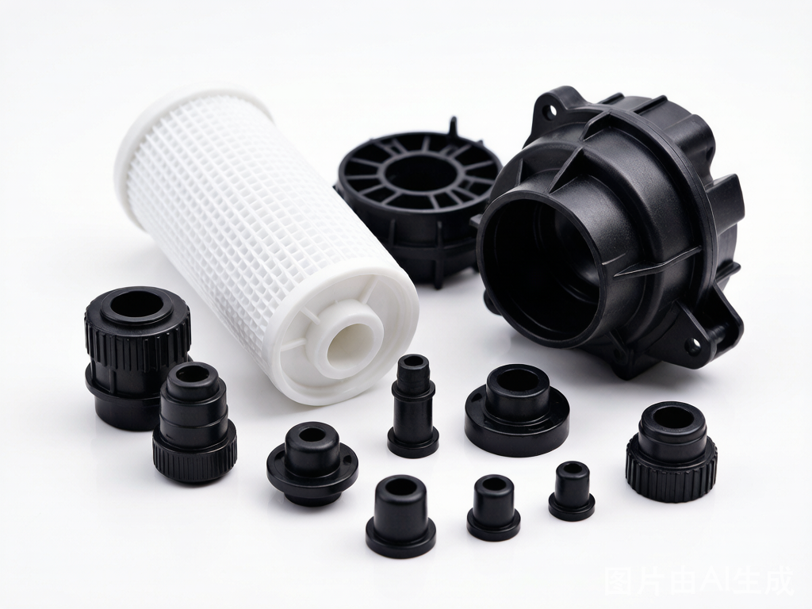
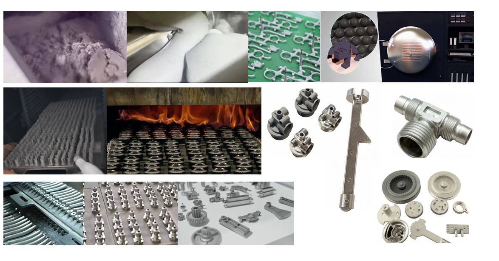
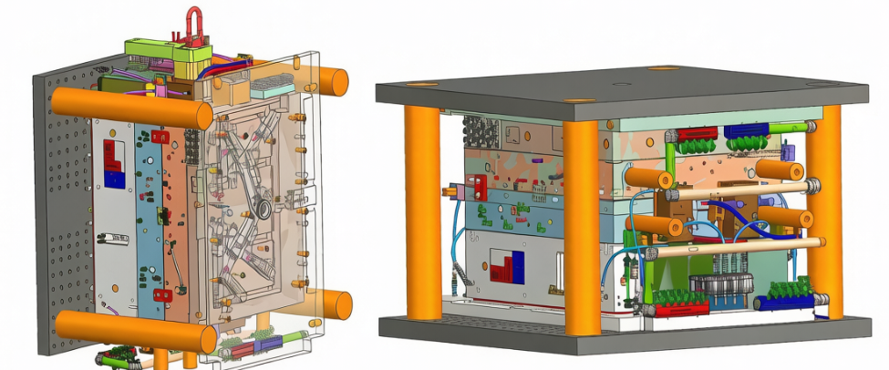
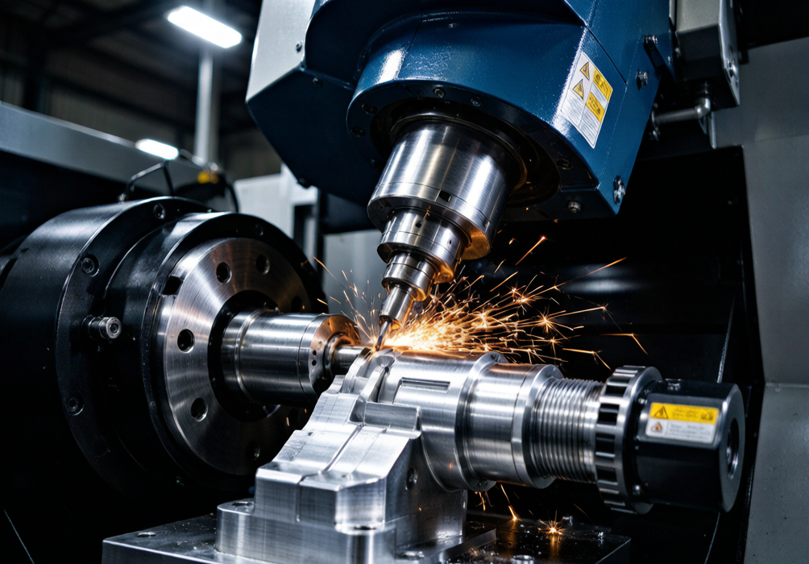
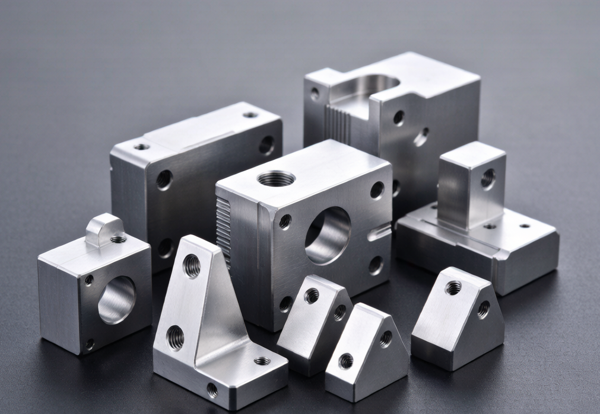
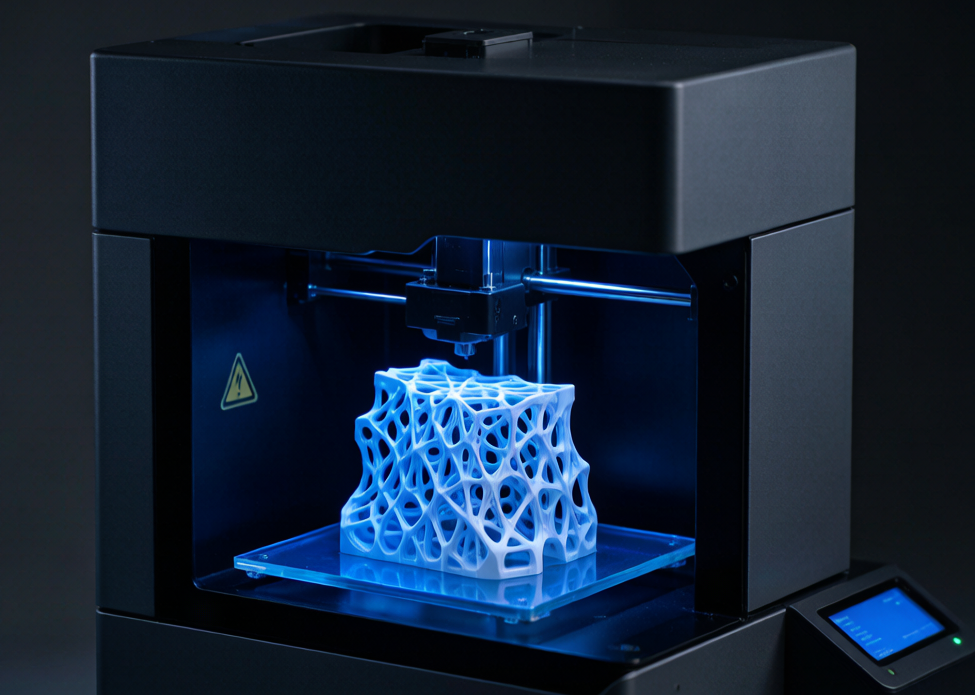

From first concept to full-rate production — comprehensive MANUFACTURING solutions tailored to your requirements.

Our injection molding capabilities cover the full spectrum — from single-cavity prototype molds to high-volume multi-cavity production tools. We work with a broad range of engineering-grade thermoplastics and apply rigorous scientific molding principles to ensure part-to-part consistency.
Whether your application demands optical clarity, chemical resistance, structural strength, or soft-touch ergonomics, our materials expertise ensures the right resin selection for every design.

Metal Injection Molding (MIM) is an advanced powder metallurgy process that combines the design freedom of plastic injection molding with the strength and performance of metal. At RC Precision, we transform fine metal powders into high-performance components with exceptional accuracy, repeatability, and material density.
Our mission is simple: deliver precision, performance, and reliability in every component we manufacture — whether it's a batch of 10 or 10,000. From feedstock preparation to sintering, our end-to-end MIM process ensures consistent quality for the most demanding applications in automotive, aerospace, medical, and consumer electronics.

Our tooling department is staffed by experienced mold designers and tool makers who understand the full lifecycle of a production mold. We apply DFM (Design for Manufacturability) principles from day one to minimize cost, reduce lead time, and ensure mold longevity.
We maintain strong relationships with local toolshops, allowing us to source work with competitive lead times and pricing across a wide range of complexity and volume.

Equipped with modern 3-axis, 4-axis, and 5-axis machining centers, our CNC department produces complex metal parts with exceptional accuracy. We are proficient in machining a wide range of metals including aluminum, stainless steel, carbon steel, brass, and titanium.
Whether you need a single prototype or a recurring production run, our programming team will optimize the machining strategy to minimize cycle time while holding the required tolerances throughout the run.

Speed is critical in product development. Our Rapid Prototyping services help you validate designs quickly before committing to expensive production tooling. Using our in-house mold base system, we keep mold build time and cost to a minimum — passing savings directly to our customers.
Our bridge tooling solutions are ideal when you need 50–500 parts to test the market or validate a design, without the upfront cost of hardened steel molds.

We bridge the gap between concept and production with advanced industrial 3D printing technologies. Unlike traditional MANUFACTURING, 3D printing allows for complex geometries and internal structures that are impossible to machine or mold — making it ideal for functional testing and low-volume production.
Whether you're an individual inventor or an established company, we tailor our engineering and production services to fit your needs — from concept to market-ready product.
CAD modeling, industrial design, and aesthetic development for new products.
Material selection, process analysis, and cost modeling before tooling investment.
Simulation to predict fill patterns, warpage, and optimize gate locations.
Pad printing, hot stamping, painting, and laser engraving on finished parts.
Full production tooling, PPAP documentation, and volume ramp-up support.